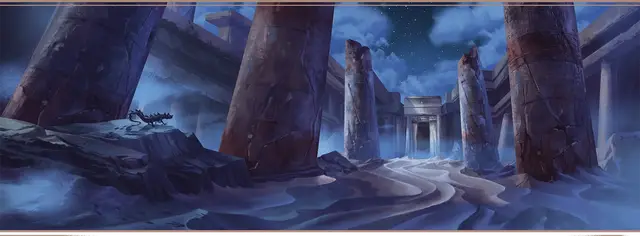

Расхититель гробниц Мулхоранда
Mulhorandi Tomb Raider

Характеристики Ловкость, Телосложение, Интеллект
Черта Везучий
Навыки Расследование, Религия
Инструменты Инструменты каменщика
Снаряжение Выберите А или Б: (А) Кинжал, Лёгкий молот, Инструменты каменщика, Рюкзак, Спальник, Ломик, Лестница, Шест, 2 Кошеля, Верёвка, Леска, Трутница, 5 Факелов, Дорожная одежда, Бурдюк и 26 ЗМ; или (Б) 50 ЗМ
Вы выросли в землях живых королей-богов, и с детства вы слышали бесчисленное количество рассказов о древних империях и погребённых городах. В этих историях Мулхоранд был землёй, через которую рекой текли иноземные богатства, бесценные сокровища, которые теперь только и ждут кого-нибудь достаточно умелого и храброго, чтобы отыскать их. Вы решили, что именно вы станете тем, кто исследует склепы, гробницы и пирамиды вашей родины — и разыщет реликвии вашего народа.